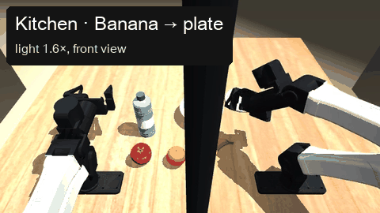
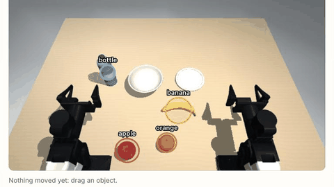
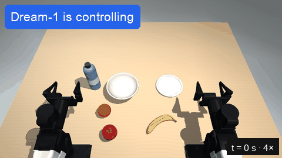
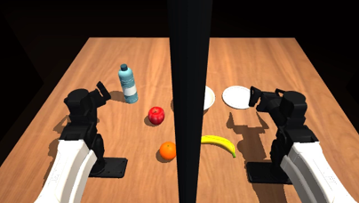
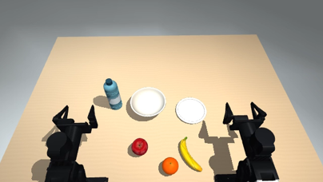
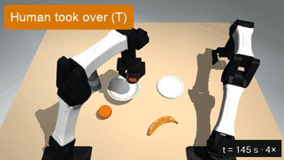
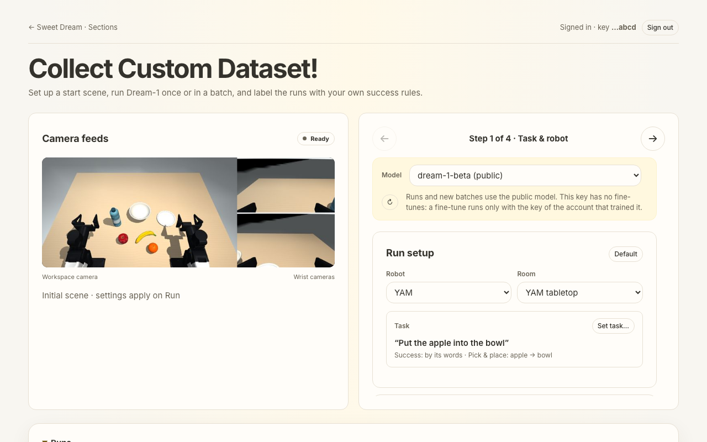
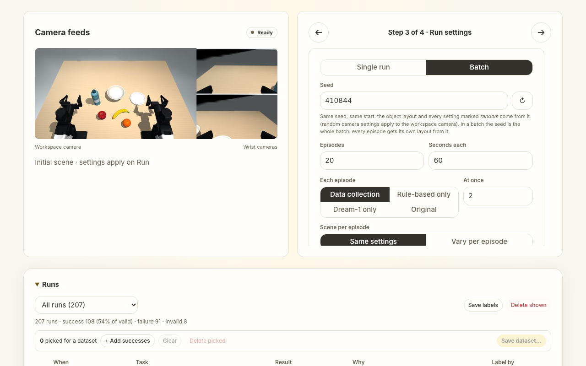
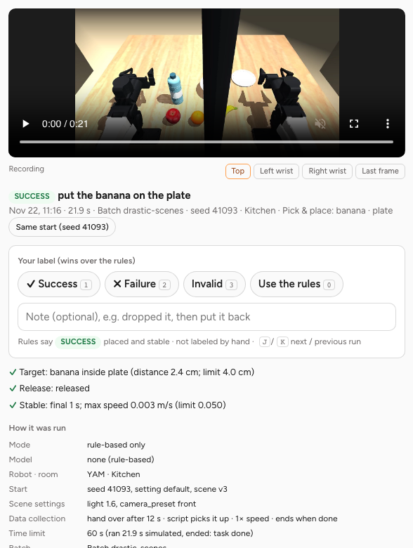
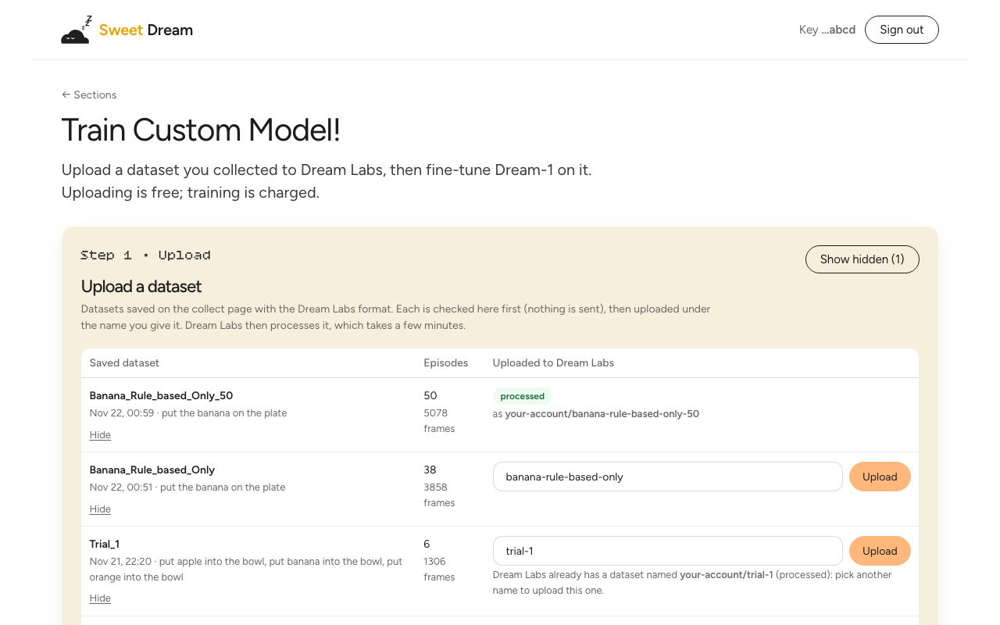

A two-minute tour of Sweet Dream, with narration: sign in, define success, collect a run, save a dataset, train, test.
We introduce Sweet Dream, a tool that provides a full pipeline for building diverse robot
datasets in simulation to fine-tune Dream-1: seeded scenes varied in layout, room, light and camera, failed runs
finished by a recovery script or a person, every run labeled by the success you define, and datasets saved in the format
Dream Labs trains on, then uploaded, fine-tuned and tested from the same app.
Overview

Diverse demonstrations: six rooms, lights and cameras

Define success: set what success means for any task, here the apple in the bowl

Human recovery: Dream-1 stalls, a person presses T and finishes
Base · failOurs · success2% 1/5074% 37/50
Base vs ours: one apple scene, 4×; success rate on 50 held-out starts
01Vary the scene
Task: put the banana on the plate

Seed 860222

Seed 479444
If stuck
02Recover a run
Dream-1 stalls

Human takeover
03Keep verified runs
Apply the task’s success rules
Run 01 PASS
Run 02 FAIL
Run 03 PASS
Verified datasetSuccessful + recovered runs
04Fine-tune Dream-1
Verified demonstrations
Fine-tuned Dream-1
05Test on matched seeds
Base Dream-1Fine-tuned Dream-1
A fine-tuned Dream-1 is only as good as the data behind it, and good robot data is slow to collect: same
scenes, failed runs thrown away, success checked by hand. Sweet Dream turns the YAM simulator into a data factory,
one app that collects diverse, successful episodes, fine-tunes Dream-1
on them through the Dream Labs API, and tests the result against the base model in the same
scenes. On 50 held-out apple starts, our fine-tune succeeds 74% of the time, against 2% for
Dream-1 base.
Diversity on demand. One seed fixes the layout; room, light, camera and table change per episode, and
every scene can be reproduced.
Success, your way. Define what success means for any task: drag objects into a goal scene and set the
tolerances. Every run is labeled by it, with no code.
No wasted runs. When Dream-1 fails, a recovery script or a person (press T) finishes the task, and every
step is recorded with who was in control.
Closed loop, one app. Collect, export a LeRobot dataset, fine-tune, and test on held-out seeds published
on Hugging Face, all with one API key.
Chapter 1
Collect Custom Dataset
Diverse scenes. A seed sets the object layout; room, light, camera, blur and table can be changed too.
Failures become successes. When Dream-1 gets stuck, a rule-based script or a person (press T) finishes the task.
Your own success. Drag objects to where they should end up and set the distance, still time and
release; every run is judged by that goal scene.
Guided setup. Four steps with arrows: task and robot, scene, run settings, review. One run or a batch of up to 4 at once.
Ready to train. Every run is labeled; the good ones are saved in the Dream Labs format.

Step 1 of 4: model, robot, room and task, beside the camera feeds

Step 3 of 4: a batch with seed, episodes, run mode and scene per episode

Review a recorded run alongside the run list
Diverse environments
One task, many environments: each slide puts the default scene on the left and a changed environment on the right,
with another room, brighter or dimmer light, a moved or tilted camera, blur or a different table. Use the arrows or swipe.
Banana → plate · seed 41093
Default sceneYAM tabletop, default light and cameraChanged sceneKitchen · light 1.6×, front view
Apple → bowl · seed 228517
Default sceneYAM tabletop, default light and cameraChanged sceneSunny apartment · light 2×, left diagonal
Banana → bowl · seed 390442
Default sceneYAM tabletop, default light and cameraChanged sceneCottage · light 0.5×, right diagonal
Banana → plate · seed 517006
Default sceneYAM tabletop, default light and cameraChanged sceneWalnut study · light 0.4×, overhead, gray table
Apple → bowl · seed 604381
Default sceneYAM tabletop, default light and cameraChanged sceneEvening den · light 0.3×, FOV +15°
Banana → bowl · seed 712950
Default sceneYAM tabletop, default light and cameraChanged sceneYAM tabletop · light 1×, tilt -20°, pan +20°, gray table
Banana → plate · seed 803190
Default sceneYAM tabletop, default light and cameraChanged sceneKitchen · light 1×, roll -12°, blur 4px
Apple → bowl · seed 915264
Default sceneYAM tabletop, default light and cameraChanged sceneCottage · light 1.8×, overhead, roll +15°
Banana → bowl · seed 133771
Default sceneYAM tabletop, default light and cameraChanged sceneSunny apartment · light 0.7×, front view, FOV -15°, gray table
Banana → plate · seed 268840
Default sceneYAM tabletop, default light and cameraChanged sceneWalnut study · light 1.4×, left diagonal, raised 8 cm
Two rooms, varied camera and light
YAM tabletop · seed 151282YAM tabletop · seed 479444Evening den · seed 860222Evening den · seed 12715
Three cameras of one episode
The three views Dream-1 is trained on.
WorkspaceLeft wristRight wrist
Chapter 2
Train Custom Model
Fine-tune Dream-1 on a collected dataset from the app, with the key you signed in with.

Step 1 · Dataset: upload a saved dataset or import a ZIPStep 2 · Configure: steps, data mix and schedule, with the price
1 · Dataset
Upload a saved dataset or import a ZIP; Dream Labs processes it in a few minutes. Free.
2 · Configure
Name the model, pick 500 to 10,000 steps, the data mix (50% Dream-1 data or yours only) and the schedule. The price shows first; a started job can't be cancelled.
3 · Models
Follow the jobs; the finished dream-1-ft model appears here and in the Model bar.
Chapter 3
Test Custom Model
The Test page runs a model on its own, without the failure monitor or the recovery script, so its success rate is
the model's. A Model bar lists the models your key can run, the public Dream-1 betas and your fine-tunes, and
every run records which one it used. A fine-tune that is still starting up is waited for (up to 10 minutes, not
counted in the run's time).
Setup follows the same four guided steps as Collect. Runs and batches can use a test set, a
testset.json of fixed starts (ours are on Hugging Face), so a fine-tuned model and Dream-1 are compared
start for start.
The Test page: pick a fine-tune in the Model bar, then set up the run in four stepsInspect a test run and its recording
Results
Success rate on test set 10 of the apple task, "Put the apple into the bowl": 50 fixed starts
(Dangni/sweet-dream-apple
on Hugging Face, batch seed 10), every model on its own with no recovery script.
Model
Successes
Success rate
Dream-1 (base)
1 / 50
2%
Sweet Dream fine-tune (ours)
37 / 50
74%
Try It
python3 -m venv ~/dream-env
~/dream-env/bin/pip install dreamlabs pyarrow av
~/dream-env/bin/python src/app.py --port 8000
# open http://localhost:8000 and sign in with your Dream API key
Every page and option is described in the usage guide.
@misc{sweetdream2026,
title = {Sweet Dream: Diverse Data for Custom Dream-1 Fine-Tuning},
author = {{Sweet Dream contributors}},
year = {2026},
howpublished = {\url{https://github.com/2btlFe/Sweet-Dream}}
}